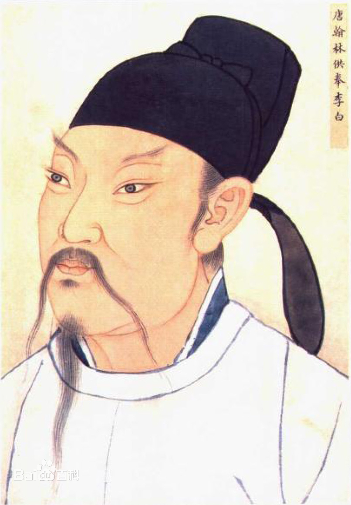

唐诗简介> |李商隐|杜甫|白居易|
李白简介

李白（701年—762年12月），字太白，号青莲居士，又号“谪仙人”，唐代伟大的浪漫主义诗人，被后人誉为“诗仙”，与杜甫并称为“李杜”，为了与另两位诗人李商隐与杜牧即“小李杜”区别，杜甫与李白又合称“大李杜”。
北京大学教授李志敏评价：“李白之诗呼吸宇宙，出乎道；杜甫之诗德参天地，源于儒，皆至天人合一境界，故能出神入化。” [1] 《旧唐书》记载李白为山东人 [2] ；《新唐书》记载，李白为兴圣皇帝李暠九世孙，与李唐诸王同宗。其人爽朗大方，爱饮酒作诗，喜交友 [3] 。
参考资料:百度百科